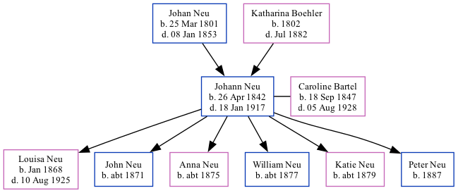

Johann Peter Neu 1842 - 1917
[ Home ] | [ Surnames Index ] | [ Family History ]The child of Johan Neu and Katharina Boehler, , Johann was the 3 times great-grandfather of Stephanie Hardesty (née Teten), was born in Dirmingen, Prussia on Apr 26, 18421,2,3 and married Caroline Bartel (with whom he had 6 children: Louisa Juliana, John, Anna, William, Katie and Peter) in Spades, Ripley, Indiana, USA on Feb 19, 18672.
During his life, he was living in Precinct D, Seward, Nebraska, USA in 18801; in Seward, Seward, Nebraska in 19002; and in Seward Ward 1, Seward, Nebraska in 19103.
He died on Jan 18, 1917 in Seward, Seward County, Nebraska.
Parents
- Johan Georg Friedrich was born on Mar 25, 1801
- Katharina Elisabetha was born in 1802
Children
- Louisa Juliana was born in Jan 1868
- John was born c. 1871
- Anna was born c. 1875
- William was born c. 1877
- Katie was born c. 1879
- Peter was born in 1887
Citations
- 1880 United States Federal Census Ancestry.com Operations Inc (Age: 38; Marital Status: Married; Relation to Head of House: Self)
- 1900 United States Federal Census Ancestry.com Operations Inc (Age: 58; Marital Status: Married; Relation to Head of House: Head)
- 1910 United States Federal Census Ancestry.com Operations Inc (Age in 1910: 68; Marital Status: Married; Relation to Head of House: Head)
Family Tree
Data (GEDCOM) maintained by Jay Weston Hannah, Omaha, Nebraska, USA.
Website generated by ged2site. Last updated on Jun 18, 2024.